En una partida cooperativa, el fusilero se integra en una escuadra. Antes de salir, necesita saber a quién sigue, con quién trabaja y qué tarea le corresponde.
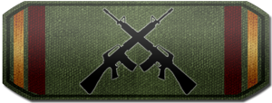
Metopa B1 · Infante básicoDistintivo que aparece bajo tu nick en el foro al obtener esta metopa.
Tu puesto en la escuadra
Al incorporarte, el jefe te asigna un numeral, un compañero y un puesto en la formación. El numeral sirve para llamarte por radio. El puesto indica dónde vas respecto a los demás; el sector, qué parte del terreno te toca observar.
Ejemplo de asignación. «Vega, eres Dos. Vas detrás de Uno, que es tu binomio. En este tramo observa el lado derecho del camino».
Disciplina en cooperativo
En la zona de reunión mantén el arma en una dirección segura y espera la orden de salida. Si alguien atraviesa tu línea de tiro, interrumpe el fuego. Antes de cambiar de rol, recoger el arma de otro jugador o separarte a por munición, avisa al jefe. En una misión sin reaparición, acuerda también qué hará la unidad si pierde a un miembro.
Del binomio al pelotón. Dos compañeros forman un binomio. El jefe de escuadra reparte puestos y sectores entre sus equipos. Si varias escuadras trabajan juntas, el jefe de pelotón coordina sus cometidos. El numeral identifica tu puesto dentro del reparto anunciado; en caso de baja, conserva el tuyo hasta que el jefe reorganice el grupo.
Observa → orienta → decide → actúa (OODA). Ves a un jugador salir de un patio. Recuerdas que otra pareja está en ese lado de la calle. Mantienes el arma en dirección segura y pides identificación. Cuando la pareja responde, actualizas tu sector y continúas.
Qué tienes que saber al salir del briefing
Explica a tu binomio con tus palabras qué debe conseguir la patrulla, cuál es vuestra tarea y quién asume el mando si el jefe queda fuera. Señala dónde están las unidades amigas y qué condiciones ha dado el mando para abrir fuego. Si una silueta no se identifica, describe lo que ves y pide confirmación.
Antes de la patrulla
Identifica a tu jefe, tu número y tu binomio. El número permite dar una orden breve aunque dos jugadores tengan el mismo rol. Al oír el tuyo, comprueba qué puesto debes ocupar y quién se mueve contigo.
Revisa el equipo según tu cometido. Comprueba que los cargadores corresponden a tu arma, que llevas el material asignado y que puedes seguir el ritmo del grupo. Si transportas munición para otro compañero, acuerda con él quién la lleva. La capacidad de la mochila no determina lo que necesitas cargar.
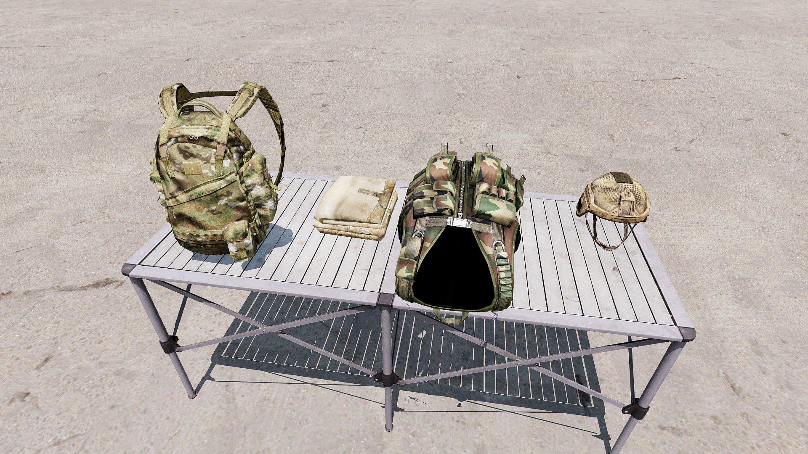
Equipo individual · El casco y el chaleco aportan protección. En el briefing se comprueba además quién lleva la radio, el material sanitario y la carga compartida de la escuadra.
B1 · Infante básicoHoja 02
Equipo y responsabilidades del fusilero
Equipo de combate y reparto de carga
El fusilero necesita distinguir el equipo personal del que lleva para la escuadra. Antes de salir, localiza mapa y brújula, medio de comunicación asignado, material sanitario de la misión y munición compatible. Si el equipo comparte baterías, cargadores o material de apoyo, identifica al destinatario y avisa cuando entregues la carga.
Arma principal y secundaria
Comprueba qué cargadores corresponden a cada arma. Si recoges un arma diferente durante la partida, informa al jefe cuando el cambio afecte al reparto de munición.
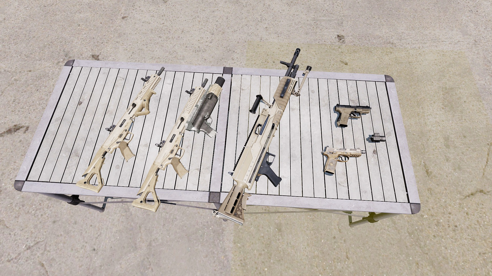
Equipo individual en la Academia · Antes de embarcar identifica qué munición pertenece a cada arma.
Observar y estimar distancias
Si ves movimiento más allá del pueblo, sitúalo respecto de una referencia conocida y da una distancia aproximada.
Responsabilidad sobre el sector
Mantén a la vista la posición del compañero que limita tu sector. Antes de cruzar por delante de otro jugador, avisa y espera su confirmación. Si ambos miráis el mismo contacto, identifica qué parte del terreno acaba de quedar sin observación y comunícalo al jefe.
B1 · Infante básicoHoja 03
Moverse y observar juntos
Imagina un camino que se estrecha entre dos muros. La columna permite que todos sigan la misma traza. Al salir a terreno abierto, el guía ordena cuña. Quien marchaba detrás de él abre su ala sin cruzarse por delante del compañero. La forma que dibujáis importa menos que conservar el enlace mientras cada uno vuelve a observar el sector que le corresponde.
Elegir la ruta y la formación
Antes de cruzar una zona abierta, localiza el siguiente punto donde podrás detenerte. Un seto puede ocultarte de la vista; una posición con protección frente al fuego permite además cubrir el movimiento de otro. Valora ambas cosas por separado.
Columna. Sigue a quien te precede en pasos estrechos. Cada integrante gira donde giró el guía. Cuña. El guía conserva la punta y cada ala mantiene su lado. Línea. Las alas llegan a la altura del guía. Mantén la separación sin adelantarlo. Adapta el intervalo a la visibilidad y avisa si pierdes al compañero.
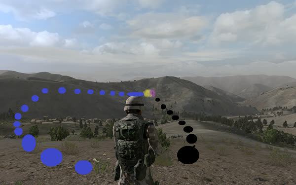
Elegir una traza · Desde el mismo punto se puede seguir una ruta directa o rodear el alto. El guía anuncia el recorrido que seguirá la cola antes de perderse de vista.
Durante un alto
Conserva tu sector aunque otro compañero haya visto algo en el suyo. En un perímetro, comprueba con los vecinos dónde se unen vuestros sectores. Antes de cambiar de posición, identifica a los compañeros que podrían cruzar por delante de ti.
Reconocer las formas del equipo
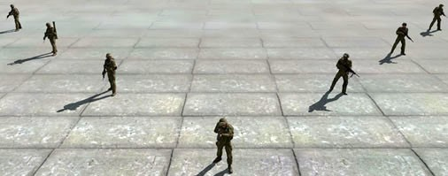
Cuña · Un jugador forma la punta y los demás se reparten a ambos lados, progresivamente más atrás.
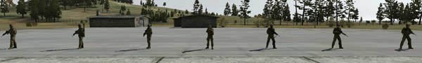
Línea · Los siete jugadores se sitúan a una altura similar. Observa la separación entre compañeros a lo largo del frente.
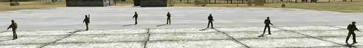
Cuña invertida · Los extremos quedan adelantados y el centro retrasado. Compara la posición del centro con la primera captura.
Comparar las seis formaciones desde arriba
Columna
Doble columna
Línea
Diamante
Cuña
Cuña invertida
↑ Frente de marcha · Cada punto representa a un jugador. Las figuras muestran la forma; los efectivos y la separación se ajustan a la misión.
Doble columna y columna escalonada
En doble columna avanzan dos hileras. En escalonada, los puestos se alternan a ambos lados del eje de marcha. Conserva tu lado y localiza a quien marca el ritmo.
Línea, cuña y cuña invertida
En línea, los puestos quedan a una altura similar. La cuña presenta una punta adelantada; vista desde arriba, la cuña invertida abre sus dos brazos hacia el frente.
Diamante
Reconoce cuatro referencias: punta, dos costados y cierre. Si falta el jugador que cerraba, avisa para que el jefe reasigne la retaguardia.
Avance y repliegue
En marcha continua el grupo progresa junto. En los saltos se reparten dos tareas: un elemento observa y cubre mientras el otro cambia de posición. Quien llega confirma que está listo para cubrir antes de que el compañero abandone su puesto. En el repliegue se conserva ese relevo mientras aumenta la distancia respecto al contacto.
Seis maniobras en movimiento
Las animaciones proceden del briefing de Arma 3 del grupo. Fíjate en los puestos y los relevos para reproducir la maniobra en ambos juegos. Abre una maniobra y reproduce el ejemplo. En los dos saltos, observa dónde queda B al acabar su movimiento.
01Avance en columna
Sigue la traza del guía. Gira cuando llegues al mismo punto.
Formación
02De columna a cuña
El guía mantiene el rumbo. Cada ala se abre por su lado.
Formación
03De cuña a línea
Alcanza la altura del guía y conserva la separación lateral.
Formación
04Salto escalonado
B alcanza a A y se detiene a su altura.
Binomio
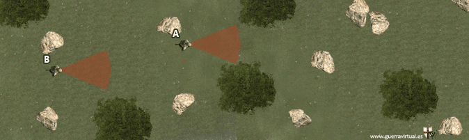
01 · B mantiene su sectorA avanza mientras B observa desde su posición.
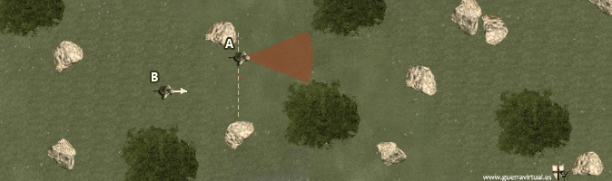
02 · A está listoAl llegar, A recupera el sector y confirma que puede cubrir a B.
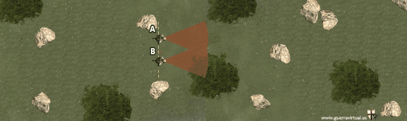
03 · B alcanza a AEn un salto escalonado ambos terminan a la misma altura.
05Salto alternado
B rebasa a A. En el siguiente salto, A vuelve a ponerse delante.
Binomio
06Repliegue por binomios
Una pareja retrocede mientras la otra permanece en posición y cubre su sector.
Escuadra
B1 · Infante básicoHoja 04
Relevar, reagrupar y dar cuenta
Un relevo tiene dos momentos distintos: llegar y estar en condiciones de cubrir. Si el primero acaba de alcanzar el muro y se gira para localizar a su compañero, todavía no observa su sector. El segundo espera la confirmación acordada. La misma distinción sirve al reagruparse: ver a alguien llegar no equivale a haber contado a toda la escuadra.
Preparar el relevo
Tu compañero llega al muro, pero todavía está buscando su sector. Si sales en ese instante, los dos estaréis ocupados en moveros o colocaros. Espera a que confirme que puede cubrirte. En un salto escalonado te detienes a su altura. En uno alternado lo rebasas y ocupas el siguiente puesto.
Trabajar con un especialista
Si llevas munición para el lanzador, acuerda el reparto antes de la marcha y avisa si os separáis. Si acompañas a un tirador de precisión, dad primero una referencia que los dos reconozcáis y después la distancia estimada. Así podréis comprobar si estáis observando el mismo punto.
Si un compañero queda fuera
Da su última posición confirmada e indica si lo ves o solo has perdido contacto con él. Comunica si responde y si puede moverse, cuando puedas comprobarlo en la simulación. Un jugador mantiene el enlace con el sanitario; el resto conserva los sectores asignados. Tras el incidente, cada binomio confirma personal, munición disponible y material perdido antes de reanudar la marcha.
B1 · Infante básicoHoja 05
El guía desaparece tras una tapia
La cabeza de la columna dobla una esquina. El último binomio todavía no ha llegado al giro. Si el guía acelera y el último corta por otra calle, la escuadra acaba en dos rutas distintas. El último comunica la referencia que conserva; el guía reduce la marcha y comprueba que la cola ha pasado el mismo punto. El guía conserva el enlace con la cola antes de iniciar el siguiente tramo.
Del campo al interior de un edificio
En terreno abierto puedes seguir al guía por una loma o una línea de árboles. En una población, una esquina basta para perderlo. Antes de cruzar el acceso, identifica el edificio y confirma por voz cercana o con una señal acordada que tu pareja está lista. Si el compañero desaparece de tu vista, indica tu última referencia y espera instrucciones antes de cambiar de habitación.
Una señal necesita un destinatario que pueda verla. Si el guía levanta la mano para detenerse y el último jugador está detrás del muro, transmite el alto hacia atrás. Comprueba que la cola también se ha detenido.
B1 · Infante básicoHoja 06
Incorporación, reunión e identificación
Incorporarse a una patrulla en marcha
Llegas cuando la escuadra ya se ha desplazado. Antes de seguir al primer uniforme que veas, contacta con tu jefe. Pide tres datos: el punto donde incorporarte, el indicativo de quien te recibirá y tu puesto al llegar. Una vez reunido, confirma tu nombre. Así quien lleva el recuento sabe que estás con la unidad y puede asignarte un sector.
Si la escuadra se dispersa
Antes de partir, localiza el punto de reunión y escucha qué debes hacer al llegar. «El cruce» resulta ambiguo si la ruta pasa por tres. «La entrada oeste del cementerio» identifica un acceso que el grupo puede reconocer. Si solo lo habéis visto en el mapa, el guía debe comprobar sobre el terreno que se distingue. Si el jefe lo cambia, confirma el nuevo lugar.
Al reunirte, preséntate ante quien lleva el recuento y ocupa el sector que te indique. Distingue a los presentes de quienes solo han contestado por radio. Si sois tres allí y un cuarto está en camino, el parte es «Tres en el punto. Cuatro tiene enlace y sigue en ruta».
Identificar antes de actuar
Ves una silueta cruzar un camino cerca de donde opera otra pareja. Distingue la observación («una persona cruza hacia el bosque») de la identificación. Contrasta ubicación, equipo visible y posición conocida de los aliados. Si persiste la duda, informa y conserva el contacto visual. El briefing determina las condiciones de la misión para abrir fuego.
B2 · OrientaciónHoja 07
Orientación
Para seguir una ruta necesitas un punto de partida, un rumbo y una referencia que puedas reconocer al llegar.
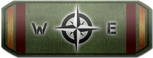
Metopa B2 · OrientaciónDistintivo que aparece bajo tu nick en el foro al obtener esta metopa.
Del terreno al mapa
En un mapa el norte sirve de referencia común aunque dos jugadores miren en direcciones opuestas. Empieza por orientar el mapa y compara elementos grandes: curso del río, trazado de la carretera y forma de la ladera. Después busca el objeto pequeño. Dos iglesias parecidas dejan de confundirse si una está junto al río y la otra sobre una loma.
La leyenda y la escala
Antes de interpretar una marca, consulta la leyenda del mapa que usa la misión. Distingue elementos permanentes del terreno de anotaciones de los jugadores. Una marca de contacto sin hora puede seguir visible después de que el contacto haya desaparecido. Indica quién lo vio y cuándo.
Leer el terreno
Empieza por elementos que puedas reconocer tanto en el mapa como a simple vista: una iglesia aislada, un cruce o la forma de una loma. Las curvas de nivel unen puntos de igual altitud. Si aparecen juntas, la pendiente es mayor. Comprueba si el camino sube o baja como esperabas.
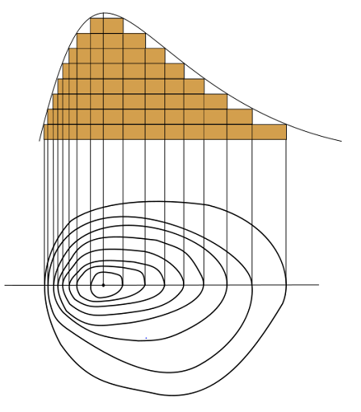
Lámina B2 · Interpretación del relieve.
Dar una posición
Lee primero la coordenada hacia el este y después hacia el norte. En la lámina de Montignac, 051 069 identifica la cuadrícula de la granja. Para concretar el lugar dentro de ella, añade una referencia inequívoca, por ejemplo el lado del edificio junto al que estás. Acuerda con el grupo la precisión que vais a utilizar.
Localizar la granja al este de Montignac
Busca la palabra farm y el símbolo azul inmediatamente debajo. Sigue su columna hasta el margen superior: 51. Sigue su fila hacia la izquierda: 69. En la cuadrícula de cien metros se transmite 051 069. Conserva los ceros iniciales y lee cada cifra por separado.
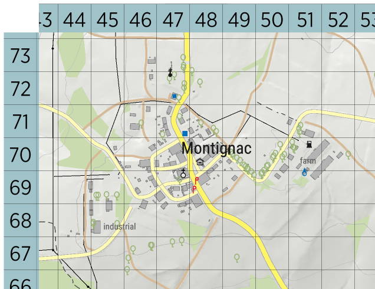
Columna 051Fila 069Referencia Granja
Everon · Montignac. La traza vertical parte de la columna; la horizontal recorre la fila. El círculo rodea el símbolo azul de la granja. Cartografía del mosaico de capturas de Arma Reforger de Heisenburger.Consultar el mapa original sin trazas
Hay otro símbolo azul al noroeste del pueblo, en 047 072. Decir solo «el símbolo azul cerca de Montignac» permite confundirlos. La cuadrícula y la referencia «granja al este del pueblo» identifican el mismo lugar por dos vías.
Ejemplo resuelto · Comparar dos laderas
Dos caminos unen cotas de 100 y 140 metros. Uno cruza las curvas en un tramo corto; el otro gana la misma altura a lo largo de un rodeo. El primero sube con más pendiente de media. Antes de decidir, mira la escala y las cotas rotuladas: al cambiar el nivel de detalle pueden aparecer curvas intermedias.
De tu mapa al mapa del destinatario
El GPS, cuando esté disponible, ofrece una lectura de posición. Contrástala con el terreno y conserva los ceros iniciales al transmitirla. En Arma 3, el canal elegido determina quién ve una marca compartida. Si una escuadra marca su posición en el canal de grupo, otra escuadra puede no verla. Da también la cuadrícula por la red acordada y pide lectura de vuelta. En Reforger, confirma qué ayudas y marcas comparten realmente ambas unidades.
B2 · OrientaciónHoja 08
Distancia y rumbo desde un origen conocido
Medir un tramo antes de salir
Lee la distancia representada por cada cuadro en el mapa que tienes delante. Si la escala indica 100 metros por cuadro y el camino recorre tres cuadros hacia el este, ese tramo recto mide unos 300 metros. Una carretera con curvas será más larga. Usa ese cálculo para anticipar el siguiente cruce, y confirma con el terreno que has llegado al correcto.
Compartir un rumbo sin ambigüedad
«Rumbo 090 desde la iglesia» fija una dirección hacia el este y un origen. Dos patrullas en lugares distintos que miren al 090 verán paisajes diferentes. Para señalar un objeto a otra unidad, acompaña el rumbo con tu posición y una referencia del terreno.
B2 · OrientaciónHoja 09
Preparar y seguir un itinerario
Divide la ruta en tramos que puedas reconocer. Para llegar a la granja de Montignac, identifica primero la salida del pueblo y después el acceso a la granja. Antes de abandonar la carretera, contrasta la dirección con la posición de los edificios en el mapa.
Seguir un rumbo
Orienta el mapa, identifica el destino y toma con la brújula la dirección del siguiente tramo. Escoge un objeto visible en esa dirección y avanza hasta él. Allí vuelve a comprobar el rumbo. Si la misión proporciona GPS, contrasta su lectura con el terreno. Con mapa y brújula, utiliza una segunda referencia para verificar la primera.
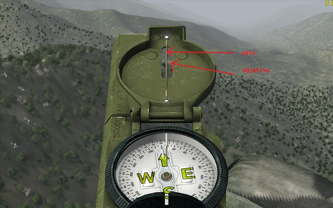
Brújula · Alinea la referencia visible con la mira antes de leer la marcación. Captura de archivo de la Academia.
B2 · OrientaciónHoja 10
Encontrar la salida de un pueblo
Tanto en Everon o Arland como en un terreno de Arma 3, un cruce reconocible permite fijar el punto de partida en el mapa. El guía identifica la salida con dos referencias sucesivas: qué carretera va a seguir y qué elemento encontrará después. Si ambas salidas tienen casas a la derecha, esa pista aporta poco. La dirección del camino y el edificio que debería aparecer más adelante permiten distinguirlas. La salida correcta se confirma antes de dejar atrás el pueblo.
B2 · OrientaciónHoja 11
Obstáculos y visibilidad reducida
Rodear un obstáculo y retomar la ruta
Si una vaguada o una cerca interrumpe el tramo, identifica un punto reconocible al otro lado. Conserva la última posición segura y divide el rodeo en tramos cortos. Al reencontrar la ruta, vuelve a comprobar tanto el rumbo como el lugar donde te reincorporas. Caminar en la dirección correcta desde otra carretera puede llevarte a un destino distinto.
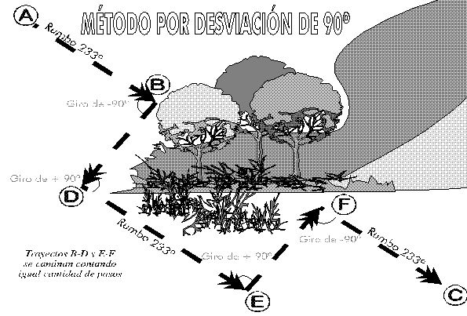
Rodeo · La referencia elegida conserva la dirección del tramo original.
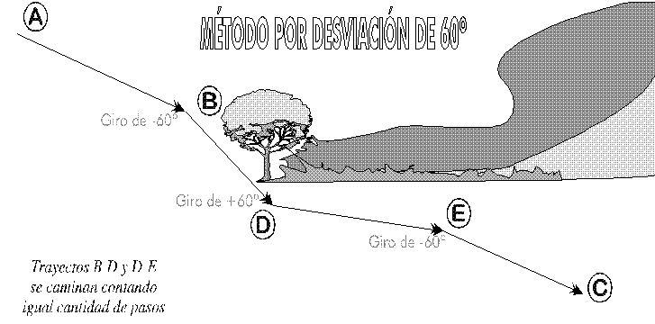
Retorno · Comprueba el punto de reentrada antes de continuar.
Orientación con visibilidad reducida
Al oscurecer desaparecen referencias lejanas. Acorta los tramos y emplea límites continuos que puedas reconocer: una pista, el borde de un bosque o la orilla de un río. Sol y estrellas pueden orientar de forma aproximada si están visibles; para comunicar una posición precisa contrasta el terreno con la cuadrícula y la brújula.
B2 · OrientaciónHoja 12
Resolver una posición dudosa
Una coordenada localiza una zona; su precisión depende de los dígitos y de la cuadrícula del mapa. Lee hacia la derecha y luego hacia arriba, conservando los ceros iniciales. En el ejemplo 074-975, intercambiar los dos bloques cambia el lugar. Comprueba que la zona señalada contiene la referencia que acabas de describir.
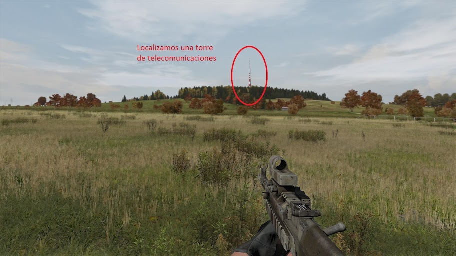
1 · En el terreno, la torre sobresale del bosque. Localiza una segunda referencia antes de dar por segura tu posición.
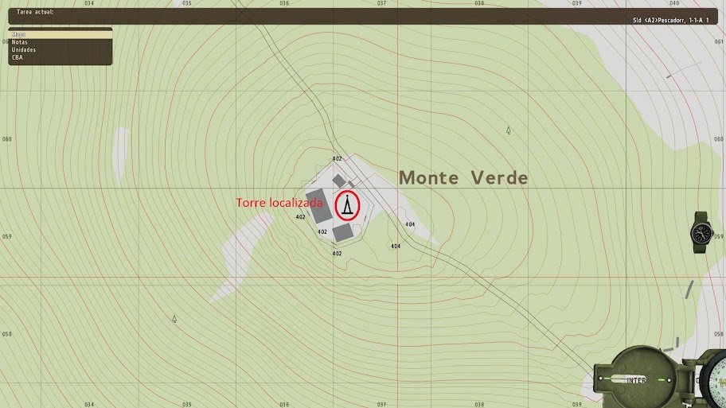
2 · En el mapa, el símbolo fija la posición de la torre. Tu patrulla se encuentra en la dirección inversa al rumbo que tomaste hacia ella.
Dos cruces en la misma cuadrícula
Dar solo la cuadrícula puede dejar dos destinos posibles. Añade qué ramal debéis tomar y qué veréis al llegar. «Cruce al este del pueblo, junto al acceso de la granja» permite a otro jugador comprobar la elección en su propio mapa.
Recuperar la posición
Parte del último punto que reconociste con seguridad. Con una sola referencia conocida puedes estimar tu posición si también estimas su distancia. Con dos referencias separadas, toma el rumbo hacia cada una y prolonga en el mapa las direcciones inversas desde ambos objetos. Su cruce aproxima tu posición. Si discrepa del terreno, busca una tercera referencia.
Del rumbo observado al trazo en el mapa
La brújula mide desde ti hacia el objeto. En el mapa conoces el objeto y buscas tu posición, así que trazas en sentido contrario. Para invertir un rumbo inferior a 180°, suma 180°. Desde 180° en adelante, resta 180°.
Mezquita. En el ejemplo de Armados, el observador la ve al 222°. Desde el símbolo de la mezquita traza hacia 042°.
Cruce de carreteras. Lo ve al 140°. Desde el cruce traza hacia 320°.
Posición estimada. Sigue ambas líneas desde sus respectivos orígenes. Su intersección sitúa al observador en la cuadrícula 110 031.
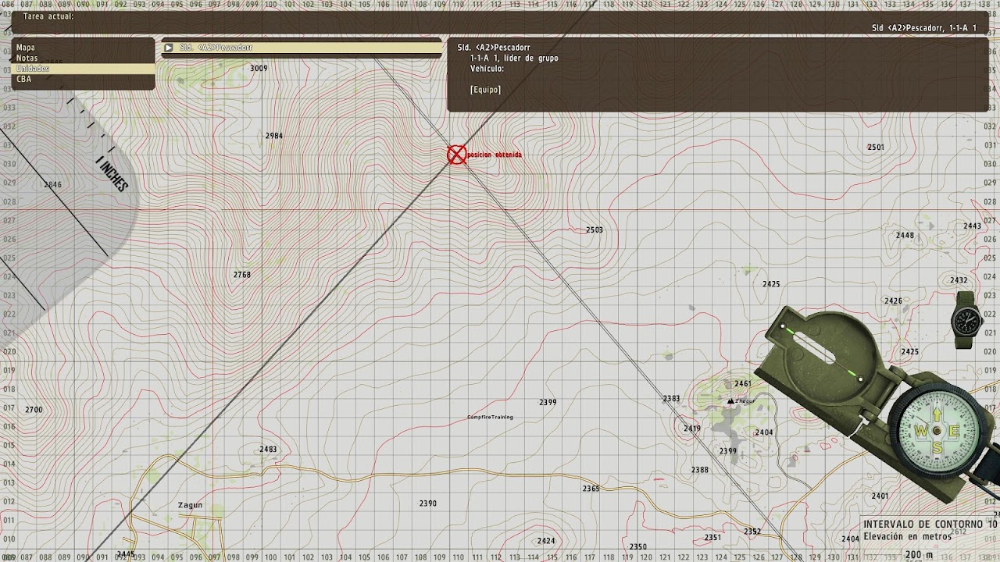
Archivo de la Academia · Esbekistán, Arma 2 OA. La marca roja señala el cruce. En Everon puedes aplicar la misma lectura con dos referencias reconocibles de tu mapa.
Cuando algo no encaja
Esperabas subir y el camino desciende. Detente en el último punto identificable y contrasta el relieve con otra referencia. Continuar por el camino equivocado aumenta la zona que después tendrás que revisar.
Plan de reunión si os separáis
Antes de partir, ambos debéis señalar el mismo punto en vuestros mapas y saber cuándo acudir y cuánto esperar allí según el briefing. Si desaparece el contacto visual, distingue la última posición segura del lugar donde crees estar. Comunica la diferencia y aplica el plan acordado. Dos jugadores buscándose a la vez pueden cruzarse sin verse.
B3 · ComunicacionesHoja 13
Comunicaciones
Una transmisión sirve cuando el destinatario sabe quién le llama, qué ha ocurrido y qué debe hacer con la información.
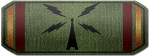
Metopa B3 · ComunicacionesDistintivo que aparece bajo tu nick en el foro al obtener esta metopa.
Compartir una red
Una red es una conversación compartida: mientras transmites, otra pareja puede estar esperando para dar un aviso. Antes de hablar decide a quién necesitas, qué hecho debe conocer y qué respuesta esperas. Si basta con que tu compañero se aparte para dejar paso, usa la voz cercana. Si el jefe debe cambiar el punto de reunión, usa la red acordada.
Antes de transmitir
Escucha si la red está libre.
Identifica a quién debe llegar el aviso.
Prepara el dato que ese destinatario necesita.
Entrar en la red
Antes de salir, conoce tu indicativo, el de tu jefe y la red que comparte tu escuadra. Haz una prueba de radio con el destinatario. Usa la voz directa cuando el compañero esté a tu lado y reserva la red para quienes necesiten oír el mensaje.
Check-in por numerales
En Grupo Armados, el líder pide el check-in por la red acordada. Cada miembro escucha a quien le precede y responde únicamente con su número. El orden es el de los numerales asignados en el briefing.
Red de escuadra · Cuatro puestos asignados
LíderAbre el check-in
«Bravo, check-in.»
UnoPuesto 1
«Uno.»
DosPuesto 2
«Dos.»
TresPuesto 3
«Tres.»
CuatroPuesto 4
«Cuatro.»
El líder contrasta las respuestas con la lista de puestos. Si queda un numeral pendiente, lo llama de forma individual. El check-in confirma quién responde por esa red; el recuento en el punto de reunión confirma quién está allí.
Abrir una comunicación entre unidades
Si Alfa necesita pasar un mensaje ordinario a Bravo, primero llama a Bravo y se identifica. Espera el «adelante» antes de dar el mensaje. Si Bravo pide que esperes, deja la red libre hasta que te dé paso.
Red entre unidades · Cambio de punto de reunión
AlfaLlama
«Bravo, de Alfa. Cambio.»
BravoDa paso
«Adelante, Alfa.»
AlfaTransmite
«Nuevo punto de reunión en la entrada norte de la iglesia. Cambio.»
BravoDevuelve el punto
«Recibido. Entrada norte de la iglesia. Cambio.»
AlfaVerifica y cierra
«Correcto. Corto.»
B3 · ComunicacionesHoja 14
Disciplina y comprobación de radio
Quién transmite y quién escucha
La red de escuadra une a sus miembros. El enlace con otra unidad corresponde al jefe o a quien este designe. Si el jefe recibe un mensaje externo, mantén libre la red que necesita para responder. Si dos transmisiones se pisan, deja un intervalo para que el destinatario indique a quién da paso.
Indicativos, claves y palabras difíciles
El indicativo identifica a la estación; las claves del briefing identifican lugares, cometidos o situaciones. En el vocabulario de la Academia, «Mike» puede designar al sanitario. Si otra unidad no comparte esa clave, pide un sanitario en lenguaje claro. Para deletrear un indicativo o una referencia escrita, utiliza el alfabeto fonético: la letra M se transmite «Mike». El contexto debe dejar claro si estás deletreando o designando un cometido.
Comprobación de señal
El check-in identifica numerales presentes en la red. Para comprobar un enlace concreto, llama al corresponsal y pregúntale cómo te recibe. Informa de la intensidad y la claridad que realmente percibes. Una voz fuerte puede seguir siendo ininteligible.
Comprobación de radio · Dos estaciones
Bravo DosSolicita comprobación
«Bravo Uno, aquí Bravo Dos. Comprobación de radio. ¿Cómo me recibe? Cambio.»
Bravo UnoInforma de la recepción
«Bravo Dos, aquí Bravo Uno. Le recibo alto y claro. ¿Cómo me recibe? Cambio.»
Bravo DosConfirma el enlace inverso
«Alto y claro. Corto.»
Radio personal, de mochila y de vehículo
La radio personal enlaza al puesto con su equipo. Cuando la misión dispone de otra radio para mando o de un equipo instalado en el vehículo, acuerda quién lo atiende. En Arma 3 los procedimientos de TFAR o ACRE dependen del mod; en Reforger cuenta el equipo efectivo del escenario. Comprueba el enlace una vez fuera del vehículo si vas a depender de él tras desembarcar.
B3 · ComunicacionesHoja 15
Describir y confirmar
Un aviso útil permite a otra persona reconocer lo observado. «Movimiento allí» depende de ver tu gesto. «Una persona junto a la entrada de la granja, se mueve hacia el pueblo» conserva su significado a distancia. Si pierdes de vista a la persona, actualiza su última posición observada en vez de describir como cierto por dónde supones que siguió.
Comunicar un contacto
Describe lo que ves, su dirección y la distancia aproximada. Usa un punto de referencia que también vea quien escucha. «Dos personas armadas, norte, unos 200 metros, junto al muro blanco». Si hay dudas sobre su identidad, exprésalas. Una dirección relativa como «a mi izquierda» solo funciona si ambos compartís orientación.
Si el aviso llega con retraso
Un avistamiento de hace tres minutos y un contacto que sigues viendo exigen decisiones distintas. Al retransmitir un aviso, conserva quién lo observó, a qué hora y qué estaba haciendo entonces. El formato SALUTE ayuda a ordenar cantidad, actividad, lugar, unidad, hora y equipo. En una llamada breve selecciona los datos que permiten situar el contacto. Una unidad desconocida se comunica como tal.
Por ejemplo, a las 18:45 el enlace recupera la radio: «Bravo Uno, aquí Bravo Dos. Última visual a las 18:42: dos personas con fusil salían de la granja hacia el pueblo. Bando sin identificar. Sin contacto visual actual. Cambio».
Fraseología y deletreo
«Recibido» confirma recepción. «Afirmativo» y «negativo» responden a una pregunta. «Cambio» cede el turno y «corto» cierra el intercambio. Para distinguir letras parecidas usa el alfabeto fonético; al dar una cuadrícula, separa los bloques y comprueba la lectura de vuelta.
Devuelve la acción asignada y el dato cuyo error cambiaría la maniobra. Si te ordenan esperar en la orilla norte del río, confirma «Mantengo la orilla norte». Un simple «recibido» acredita recepción, pero deja sin comprobar qué orilla has entendido.
La referencia debe servir a quien escucha
Desde el otro lado del valle, «a la derecha del árbol» puede señalar otro sitio. Da un rumbo o una referencia fija. Si cambia la situación durante el aviso, actualiza el dato que ha cambiado en vez de repetir todo el mensaje.
Dentro de Bravo · Aviso al jefe de escuadra
DosDa el contacto
«Aquí Dos. Dos personas con fusil en la entrada de la granja. Desde la iglesia, cero cuatro cinco grados, unos doscientos metros. Bando sin identificar.»
LíderDa una orden
«Dos, mantén observación desde la iglesia. Avisa si salen de la granja.»
DosConfirma la tarea
«Aquí Dos. Mantengo observación. Avisaré si salen.»
Dentro de la escuadra, Dos abre con su numeral y da el aviso directamente. El jefe nombra a Dos al asignarle la tarea. Ambos pueden situar la observación porque Dos da el origen de la marcación (la iglesia) y una referencia en el destino (la entrada de la granja). Ver un fusil permite informar de que van armados; el bando sigue sin identificar.
Cuando solo falla media coordenada
Bravo Uno transmite la cuadrícula de la granja de Montignac que aparece en B2 (051 069). Dos oye 051 y pierde el segundo bloque. Para evitar que el otro operador repita todo el parte, Dos identifica el fragmento que falta.
Lectura de vuelta · Se pierde el segundo bloque
Bravo DosPide solo el dato perdido
«Bravo Uno, aquí Bravo Dos. Recibido cero cinco uno. Repita segundo bloque. Cambio.»
Bravo UnoRepite
«Segundo bloque: cero seis nueve. Cambio.»
Bravo DosDevuelve la cuadrícula
«Cero cinco uno, cero seis nueve. Cambio.»
Bravo UnoVerifica y cierra
«Correcto. Corto.»
B3 · ComunicacionesHoja 16
Avisar de una baja y pedir recogida
Asistencia y recogida en el juego
Antes de salir, confirma quién lleva material sanitario y qué acciones permite el escenario. Si cae un jugador, identifica su posición, comprueba si responde y comunica lo que muestra el simulador. Aplica solo la asistencia que corresponda a tu rol en esa partida. Deja a una persona el enlace con el sanitario y comunica cualquier cambio de ubicación.
Para pedir recogida, facilita el número de jugadores, el punto accesible al vehículo y quién lo recibirá. Si el sanitario ya está atendiendo y solo falta transporte, pide transporte expresamente. El responsable del vehículo confirma el punto antes de salir.
Comunicar una baja durante la partida
Si un jugador cae y queda fuera de tu vista, comunica la última posición comprobada. Si lo tienes delante, informa de lo que observas en la partida, de cómo llegar y de qué apoyo requiere la escuadra. «Bravo Uno, aquí Bravo Dos. Un compañero caído en el patio norte de la iglesia. Acceso por la verja oeste. Solicito sanitario. Cambio». Una sola persona mantiene el enlace para que dos avisos sobre el mismo jugador no parezcan dos bajas.
B3 · ComunicacionesHoja 17
Tu compañero te oye, el otro vehículo no
En Arma 3 con comunicación nativa, hablar en el canal de vehículo llega a sus ocupantes. Para avisar al segundo vehículo necesitas una vía que comparta el destinatario. En Reforger distingue entre hablar cerca del compañero y transmitir por la radio en la frecuencia acordada. Antes de partir, pide una respuesta a alguien del segundo vehículo. Oír al jugador sentado al lado solo confirma el enlace local. Si la misión usa otras radios, comprobad el enlace con el sistema del servidor.
B3 · ComunicacionesHoja 18
Recuperar el enlace y dar un parte
Distingue que alguien te oiga de que la orden haya quedado clara. Si la respuesta llega entrecortada, repite el dato decisivo. Si no llega ninguna, aplica la alternativa ensayada. Cuando una tercera unidad retransmita, conserva el origen del aviso para que una observación antigua no parezca una confirmación nueva.
Cuando nadie responde
Acordad antes de salir qué alternativa usaréis si falla la radio. Puede ser la voz del binomio, otra unidad que retransmita o una señal visible ya ensayada. Si se pierde la red principal, la respuesta del destinatario por la vía alternativa confirma que el enlace se ha recuperado.
Pasar un mensaje por una tercera estación
Alfa y Charlie han perdido el enlace directo. Bravo oye a ambos. Cuando cada estación le dé paso, Bravo identifica de quién procede el mensaje y devuelve la confirmación a su origen.
Retransmisión · Intercambios con enlace establecido
Alfa → BravoEncarga el aviso
«Retransmita a Charlie: reunión en la entrada oeste del cementerio. Solicito confirmación. Cambio.»
Bravo → AlfaAcusa recibo
«Recibido. Retransmito a Charlie. Corto.»
Bravo → CharlieIdentifica el origen
«Mensaje de Alfa: reunión en la entrada oeste del cementerio. Confirme punto. Cambio.»
Charlie → BravoDevuelve el lugar
«Recibido. Entrada oeste del cementerio. Corto.»
Bravo → AlfaDevuelve la confirmación
«Charlie confirma reunión en la entrada oeste del cementerio. Cambio.»
Alfa → BravoCierra
«Recibido. Corto.»
Dar un parte de estado
Separa lo confirmado de lo desconocido. «Aquí Dos. Tres de cuatro reunidos en el cruce norte. Falta Vega. Última visual en la iglesia. A los tres reunidos nos queda un cargador por persona». Así el jefe sabe a quién localizar y qué apoyo hace falta.
B3 · ComunicacionesHoja 19
Academia MOAA · Transmisiones
Alfabeto fonético de radio
Deletrea las letras de la marca tal como aparecen en el mapa. Lee los números cifra a cifra, incluidos los ceros iniciales.
AAlfa
BBravo
CCharlie
DDelta
EEcho
FFoxtrot
GGolf
HHotel
IIndia
JJuliett
KKilo
LLima
MMike
NNovember
OOscar
PPapa
QQuebec
RRomeo
SSierra
TTango
UUniform
VVictor
WWhiskey
XX-ray
YYankee
ZZulu
Leer un identificador del mapa
BBravo
VVictor
0cero
7siete
BV07 se transmite «Bravo Victor cero siete».
Corregir una letra durante la lectura de vuelta
Red Alfa–Bravo · Enlace establecido
AlfaDa la referencia
«Punto de reunión marcado Bravo Victor cero siete. Confirme marca. Cambio.»
BravoDevuelve lo que oyó
«Delta Victor cero siete. Cambio.»
AlfaCorrige la primera letra
«Negativo. Primera letra Bravo. Marca completa Bravo Victor cero siete. Cambio.»
BravoDevuelve la marca corregida
«Bravo Victor cero siete. Cambio.»
AlfaConfirma y cierra
«Correcto. Corto.»
B4 · Vehículos ligerosHoja 20
Vehículos ligeros
El infante embarcado tiene un puesto, un sector y una unidad con la que debe volver a reunirse al bajar.
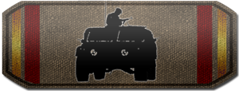
Metopa B4 · Vehículos ligerosDistintivo que aparece bajo tu nick en el foro al obtener esta metopa.
Entender el transporte
Un convoy reúne varios vehículos que siguen un recorrido común. Cada vehículo necesita una identificación que permanezca clara aunque cambie el orden de marcha. Antes de subir, relaciona tres datos: tu escuadra, el vehículo que te toca y el punto donde volveréis a juntaros. Saber en qué asiento viajas no basta para saber dónde tiene que estar tu equipo al bajar.
Reconocer el vehículo antes de ocupar un puesto
Primero identifica qué vehículo ves; después, para qué se emplea en esta misión. Un camión sanitario y un camión de reparación pueden usar chasis parecidos. La función determina a quién debes avisar y qué apoyo puedes esperar.
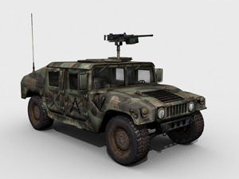
HMMWV Vehículo ligero. La movilidad prima sobre la protección.
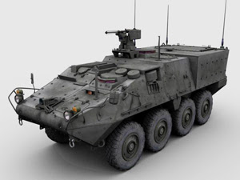
Stryker Blindado de ruedas. Identifica la variante y su cometido.
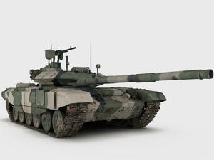
T-90 Carro de combate. Requiere coordinación con la infantería a pie.
Reconocimiento por función · Seis ejemplos
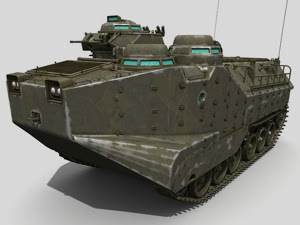
Transporte anfibio Transporta tropa y presta apoyo.
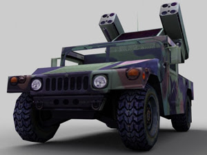
Defensa antiaérea Protege frente a amenazas aéreas.
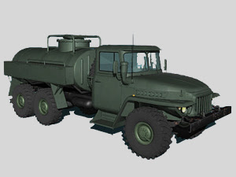
Cisterna Abastece de combustible.
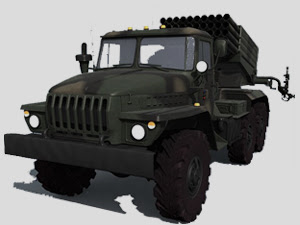
Lanzacohetes Proporciona fuego indirecto.
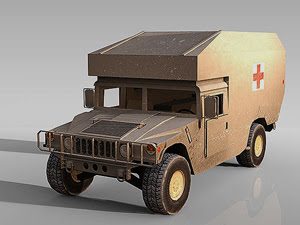
Ambulancia Traslada personal herido.
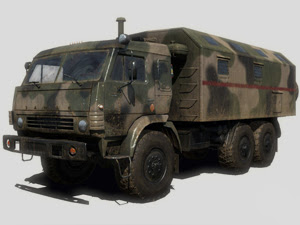
Reparaciones Da apoyo a vehículos averiados.
Reconocer qué apoyo lleva el vehículo
Observa el montaje y confirma la variante en el briefing. Un mismo chasis puede transportar tropa o llevar una ametralladora, un lanzagranadas o un sistema especializado. El artillero informa al jefe del estado de su puesto. La tropa necesita saber qué sector tiene asignado y por dónde podrá desembarcar sin cruzarlo. Si un vehículo pierde su capacidad de apoyo pero puede circular, comunica ambas cosas por separado.
Quién hace qué en el convoy
El jefe de convoy coordina los vehículos. En cada uno, el conductor mantiene el itinerario; el jefe de vehículo enlaza con el convoy y controla al personal embarcado. Si hay artillero, mantiene el sector asignado. El pasajero observa su lado y comunica lo que puede ver desde su asiento.
Antes de embarcar
Confirma vehículo, asiento, jefe de vehículo y punto de destino. El conductor atiende a la ruta inmediata; el jefe o copiloto coordina navegación y enlace; el artillero vigila el sector de su arma. La tropa embarcada amplía la observación. Un transporte armado puede seguir ofreciendo poca protección.
Ejemplo resuelto · Dos vehículos, una escuadra
Alba, León y Vera van en Uno. Sol, Roca y Mar van en Dos. Antes de partir, Vera cambia a Dos por indicación del jefe. Uno comunica «Alba y León, dos a bordo»; Dos comunica «Sol, Roca, Mar y Vera, cuatro a bordo». El responsable obtiene seis personas distintas y sabe en qué vehículo viaja cada una. Si ambos hubieran dicho únicamente «listos», el cambio habría pasado inadvertido hasta el desembarque.
Red del convoy · Cambio de pasajero
Vehículo UnoNotifica el traslado
«Vehículo Dos, aquí Vehículo Uno. Vera pasa a tu vehículo. Dos pasajeros quedan a bordo de Uno. Confirma cuando la recibas. Cambio.»
Vehículo DosAcusa recibo
«Vehículo Uno, aquí Vehículo Dos. Recibido. Pendiente de Vera. Corto.»
Vehículo DosActualiza tras el embarque
«Vehículo Uno, aquí Vehículo Dos. Vera a bordo. Cuatro pasajeros en Dos. Cambio.»
Vehículo UnoCierra el recuento
«Vehículo Dos, aquí Vehículo Uno. Recibido. Seis pasajeros embarcados. Corto.»
B4 · Vehículos ligerosHoja 21
Observar desde el vehículo
El conductor mira principalmente la ruta inmediata. Como pasajero puedes ver un obstáculo lateral antes que él. Para que el aviso sea útil debe quedar claro a qué vehículo afecta. «Dos, rama baja a tu derecha al salir del patio» permite actuar al destinatario aunque el primer vehículo ya haya pasado.
En movimiento y durante los altos
Observa el lado que te corresponde. Al informar de un obstáculo indica qué vehículo avisas y dónde está el obstáculo respecto a su marcha. Conserva tu puesto durante los altos hasta recibir instrucciones, salvo que exista peligro inmediato. Deja libres las trayectorias de los vehículos y los sectores del artillero.
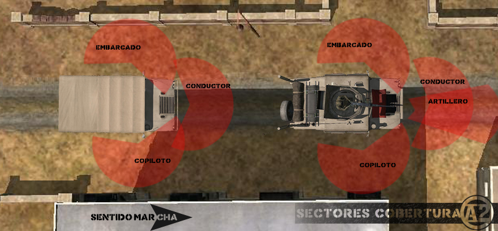
Lámina B4 · Sectores de observación.
B4 · Vehículos ligerosHoja 22
Avisos del pasajero en marcha
Indicaciones de dirección en el vehículo
Las doce son el frente del vehículo al que se refiera el aviso. En una curva, la cabeza y la cola pueden apuntar en direcciones distintas. Para los ocupantes del propio vehículo sirve la referencia horaria. Para otro vehículo del convoy añade un hito fijo o una marcación con origen conocido.
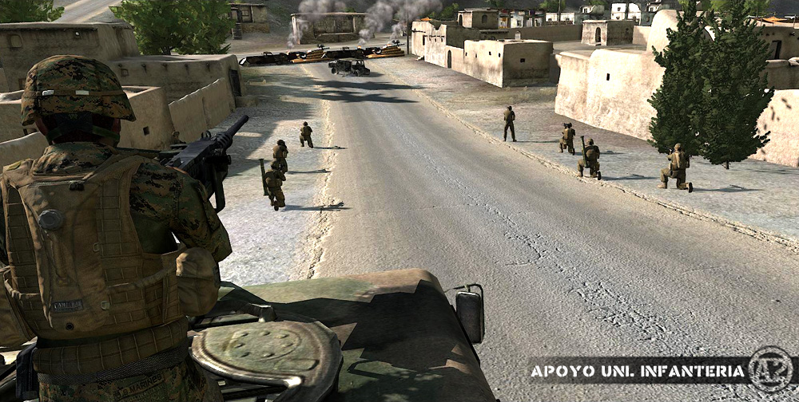
Desde el vehículo · La calle abre por delante y se ve humo al fondo. El eje de la calle permite que otro vehículo reconozca el lugar aunque llegue desde otra dirección.
Al conductor: «Humo a las doce, al fondo de la calle». Al resto del convoy: «Humo al fondo de la calle, más allá del vehículo que tenemos delante». La imagen permite informar del humo; su causa sigue sin confirmar.
Un aviso dentro del vehículo y otro para la columna
El pasajero de cabeza ve una rama baja. El conductor necesita saber dónde está en relación con su vehículo. El siguiente vehículo, que todavía no ve el árbol, necesita además una referencia del recorrido.
Voz interior: «Rama baja delante, lado derecho». Red de convoy: «Vehículo Dos, aquí Vehículo Uno. Rama baja a la derecha a la salida del patio norte. Cambio».
El responsable del vehículo retransmite una vez por la red. Los demás pasajeros conservan la observación de sus sectores.
B4 · Vehículos ligerosHoja 23
El segundo vehículo pierde al primero
El vehículo de cabeza sale de una población. El segundo encuentra dos ramales y ha perdido el contacto visual. El pasajero encargado del enlace identifica su vehículo y da el último cruce reconocido. La cabeza responde con una referencia que el segundo pueda comprobar desde su posición. Si solo dice «seguidnos», sigue faltando el dato que permite escoger el ramal. Antes de continuar, ambos confirman dónde volverán a reunirse.
B4 · Vehículos ligerosHoja 24
Avería y aviso al convoy
Si un vehículo no puede continuar
Uno sigue en marcha y Dos se detiene por una avería. El dato que falta al jefe es dónde ha quedado Dos y cuántos jugadores siguen con él. El responsable comunica posición, personal y si dispone de enlace. Si el mando redistribuye pasajeros, cada vehículo actualiza los nombres antes de anunciar que puede continuar.
Qué necesita saber el resto de la columna
Si viajas en el vehículo detenido, comunica al responsable qué ocurre en tu puesto. El responsable da un solo parte con el indicativo del vehículo, la ubicación, si puede moverse y el estado de sus ocupantes. Si desconoce la causa, describe el síntoma. Los demás vehículos esperan instrucciones antes de acercarse.
«Cabeza, aquí Dos. Inmovilizado a la salida norte del pueblo, junto al depósito de agua. Cuatro a bordo, sin heridos. Causa desconocida. Solicito recuperación. Cambio.»
Combustible, daños y apoyo
El conductor comunica si puede seguir la marcha y dónde se ha detenido. El jefe informa al convoy de la posición, el personal a bordo y qué apoyo hace falta. Si detectas un objeto sospechoso en la ruta, describe su ubicación y aspecto. El mando decide el itinerario y qué vehículo presta apoyo.
B4 · Vehículos ligerosHoja 25
Recuperar la unidad a pie
Cuando el jefe manda bajar, el grupo pasa de ocupar asientos a ocupar terreno. Si todos se detienen en la puerta, el último no puede salir y el jefe puede confundir una cola con una escuadra reunida. El primer jugador despeja el acceso y se orienta hacia su sector; el último confirma que ha salido y se incorpora al recuento.
Un alto no siempre es el destino
El convoy se detiene antes del cruce. Desde tu asiento ves un obstáculo que el conductor puede no ver. Indica el vehículo al que avisas, el lado y el obstáculo. Sigue atento a tu sector mientras el jefe decide si la tropa permanece embarcada.
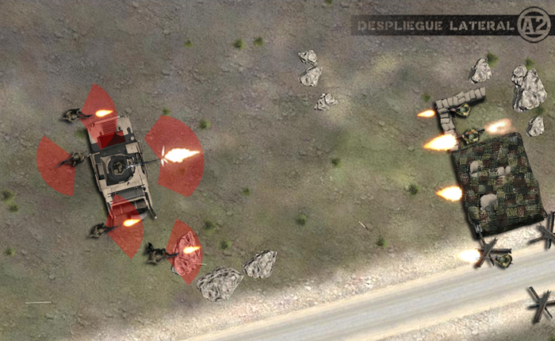
Despliegue lateral · Una vez fuera, despeja la salida y ocupa tu sector. El vehículo sigue necesitando espacio para maniobrar.
Desembarcar y reagruparse
Escucha por qué lado debes bajar y dónde va a reunirse la escuadra. Despeja la salida, ocupa tu sector y permite que baje el siguiente. El jefe comprueba que todos están fuera. Si un vehículo queda inmovilizado, comunica su posición y el estado del personal antes de organizar el apoyo.
Recuperar la escuadra
Al bajar, localiza el punto de reunión antes de seguir al primer soldado que veas. Si falta alguien, comunica quién y en qué vehículo iba. Ese dato permite buscarlo sin deshacer el perímetro.
Desembarque en zona urbana
Los edificios recortan la visión. Antes de bajar, confirma lado y punto de reunión. Al salir de un vehículo diferente al de tu binomio, usa una referencia compartida: la esquina del patio o un acceso concreto. Evita permanecer junto a las puertas y comprueba dónde está la otra tripulación antes de cruzar su recorrido.
B4 · Vehículos ligerosHoja 26
Formaciones y maniobras del convoy
Lee primero la flecha de marcha y localiza el número de tu vehículo. El sombreado rojo representa el sector que observa cada puesto. Compara las tres columnas: en la primera cambia el sector; en la escalonada cambia también la traza; en la paralela cambia la organización en dos columnas.
Columna
Uno marca el itinerario. Los vehículos intermedios reparten los flancos y el último vigila la retaguardia.
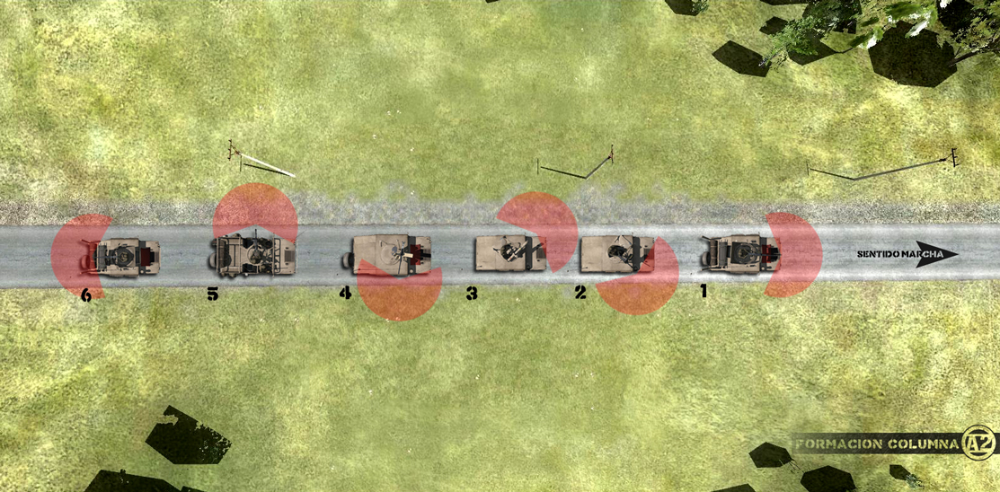
Lámina B4.01 · Columna. La flecha indica el sentido de marcha.
Columna escalonada
Los pares se desplazan respecto de los impares, conservando el orden. La vía debe permitir el desplazamiento lateral.
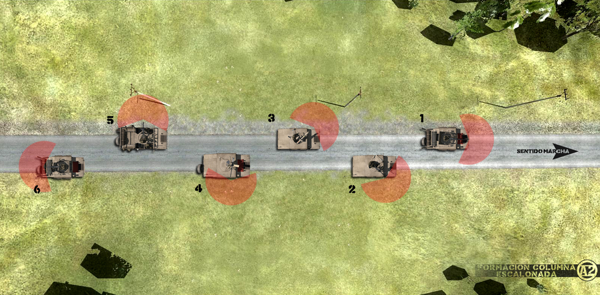
Lámina B4.02 · Columna escalonada. La flecha indica el sentido de marcha.
Columna paralela
Dos columnas avanzan a la misma altura. Cada lateral vigila el exterior; la cabeza mantiene la dirección común.
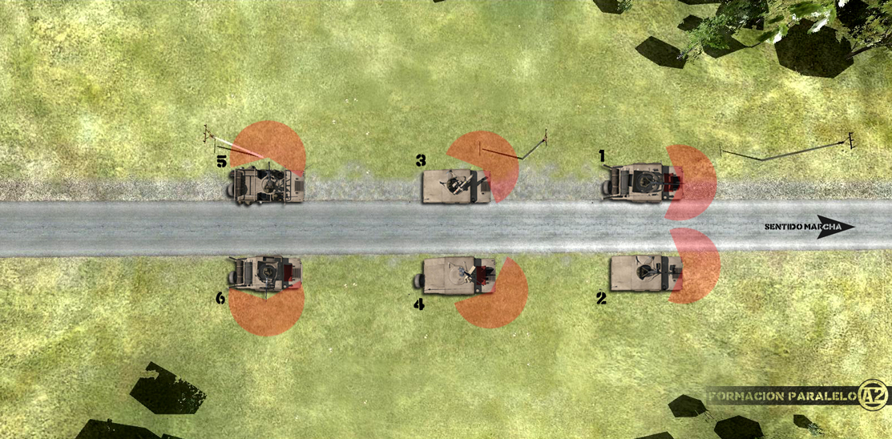
Lámina B4.03 · Columna paralela. La flecha indica el sentido de marcha.Otras seis formaciones sobre el terreno
Cuña
La cabeza guía y los restantes abren las alas. La separación lateral exige terreno despejado.
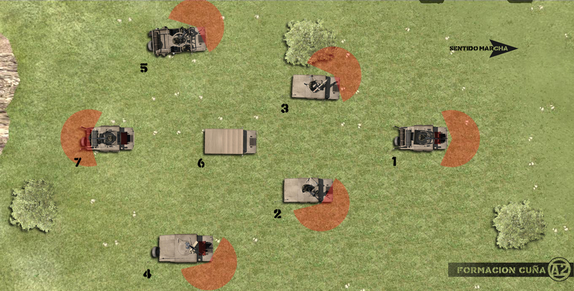
Lámina B4.04 · Cuña. La flecha indica el sentido de marcha.
Cuña invertida
Los elementos adelantados quedan a ambos lados del eje central. La escuadra la adopta cuando así lo indica el mando.
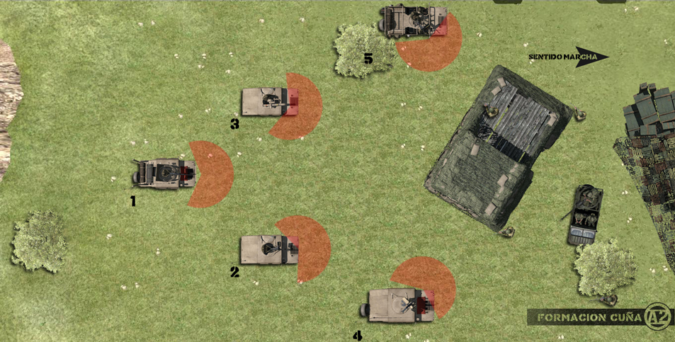
Lámina B4.05 · Cuña invertida. La flecha indica el sentido de marcha.
Fila o línea
Los vehículos se sitúan a una altura similar. Los extremos conservan sus flancos y cada tripulación comprueba dónde está el vehículo contiguo.
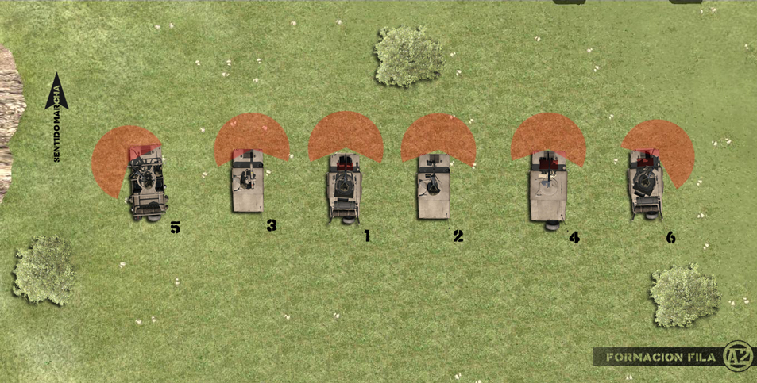
Lámina B4.06 · Fila o línea. La flecha indica el sentido de marcha.
Fila escalonada
Las dos filas quedan a distinta profundidad. Desde atrás hay que conocer la posición de la fila delantera.
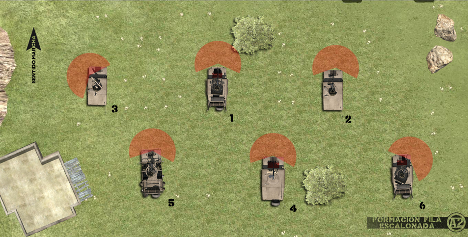
Lámina B4.07 · Fila escalonada. La flecha indica el sentido de marcha.
Columna en ala
El mando designa el ala y los vehículos que se desplazan hacia ella. El guía mantiene la referencia de avance.
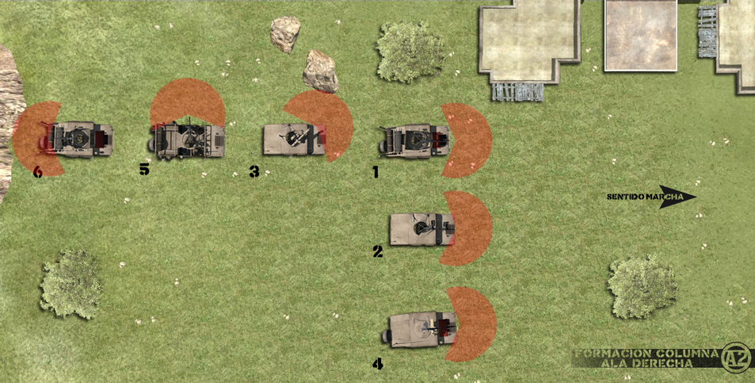
Lámina B4.08 · Columna en ala. La flecha indica el sentido de marcha.
Rombo o diamante
Los puestos de cabeza, flancos y cola delimitan un centro protegido. La anchura del terreno condiciona su empleo.
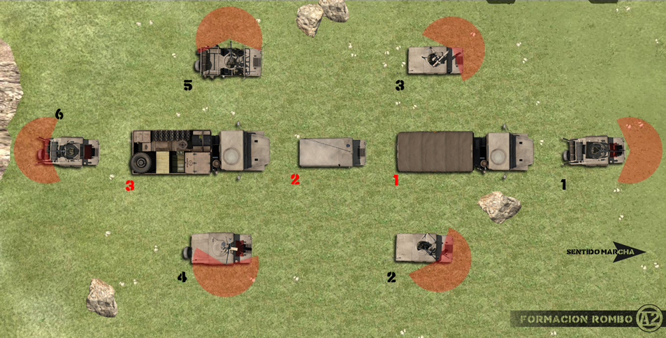
Lámina B4.09 · Rombo o diamante. La flecha indica el sentido de marcha.
Maniobras animadas
Sigue un único vehículo desde la posición inicial hasta el alto o el cambio de dirección. Después identifica qué puesto conserva su sector mientras cambia la disposición.
Alto en espigaAlto en perímetroAlto de apoyo en zonaRepliegueSalida rápida de la zonaTransición a cuñaDespliegue en líneaViraje lateralFlanqueo lateralEnvolvente
Anexo · ConsultaHoja 27
Vocabulario de patrulla
En formación
Guía
Marca la traza de la unidad. En columna, pasa por el punto donde él giró.
Sector
Parte del terreno que te toca observar. Comprueba dónde empieza el del compañero.
Binomio
Pareja que coordina sus movimientos. Antes de desplazarte, identifica quién te cubre.
Repliegue
Movimiento con el que la unidad gana distancia respecto al contacto mientras sus elementos se relevan.
En el mapa
Rumbo
Dirección medida respecto al norte. Permite compartir una dirección aunque cada jugador esté mirando a un lado distinto.
Contrarrumbo
Dirección opuesta al rumbo observado. Si ves una referencia al 140°, desde ella la línea hacia ti sigue el 320°.
Cuadrícula
Área del mapa identificada por coordenadas. Añade un detalle del terreno si hay varios destinos dentro de ella.
Punto de reunión
Lugar acordado donde la unidad vuelve a agruparse. Debe ser reconocible para todos.
En la red
Indicativo
Nombre con el que llamas a una unidad o te identificas en su red.
Acuse de recibo
Respuesta que confirma que el mensaje ha llegado. Repite un dato crítico cuando sea necesario comprobar que lo entendiste.
Lectura de vuelta
El receptor devuelve un dato decisivo, por ejemplo «cero cinco uno, cero seis nueve». El emisor confirma o corrige.
Contacto
Observación que comunicas al grupo. Describe qué ves antes de atribuirle un bando.